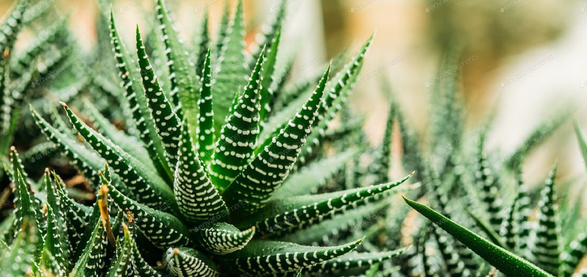
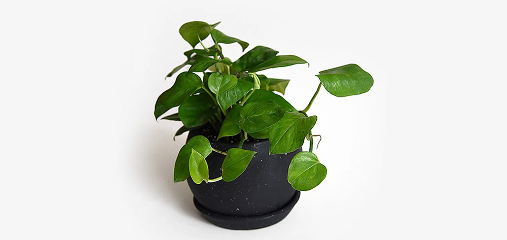
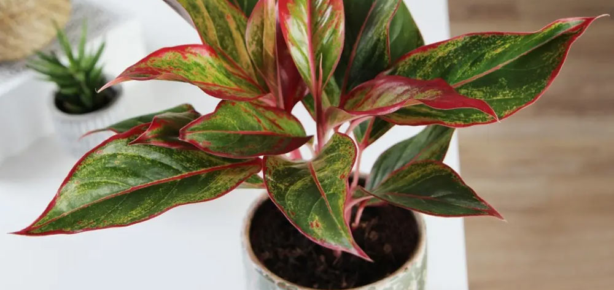
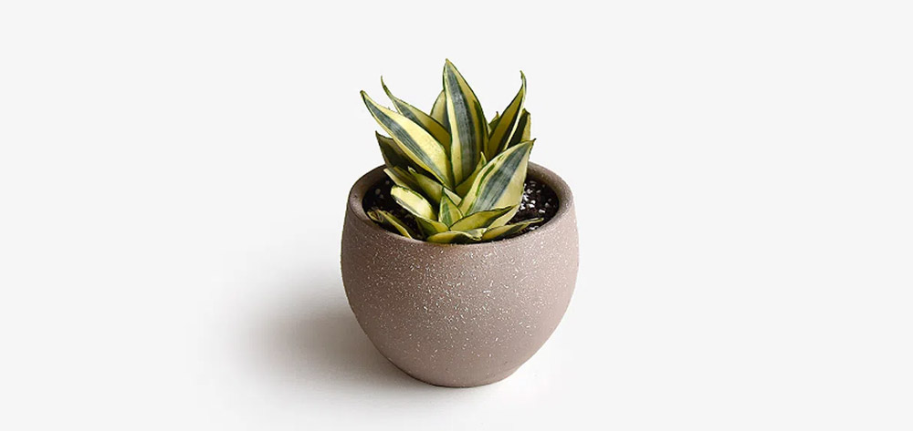

Plantas decorativas para tu hogar
|  |
Haworthia Fasciata La Haworthia Fasciata debe dejarse secar entre riegos, ya que no tolera la humedad. Esta pequeña es una adición perfecta a la mesa de la cocina, estantes o tocadores de baño. Por ello, es una buena opción para el tanque del inodoro, siempre y cuando haya una ventana. |
Planta 1 Precio: $9.900 |
|  | Golden Potus La Golden Potus es una planta de interior que te avisa cuando necesita agua. Se marchitará cuando necesite riego. Además, sus cualidades purificantes les permiten absorber y eliminar toxinas como el formaldehído que a menudo se encuentra en artículos domésticos comunes como alfombras y tapetes. |
Planta 2 Precio: $12.700 |
|  | Aglaonema Las variedades verdes toleran condiciones de poca luz sin problemas, pero las coloridas requieren la luz media de una ventana orientada al este o al oeste. No sobreriegues esta planta de fácil cuidado o la raíz se pudrirá. Con un máximo de entre 30 y 90 centímetros de altura, la Aglaonema es una maravillosa planta para departamentos. |
Planta 3 Precio: $11.950 |
|  |
Sanseviera Enana Olvidarse de regar esta planta solo la hace más feliz, ya que prefiere pasar sed. Es una adición perfecta a una mesa de noche, mesa de café o mesa de cocina. De igual forma, esta planta tolera condiciones de poca luz, así como áreas con mucha luz. Este tipo de Sansevieria solo llegará a 20 o 25 cm de altura. |
Planta 3 Precio: $13.850 |